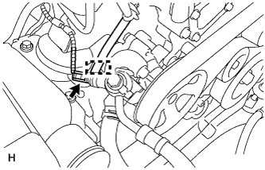
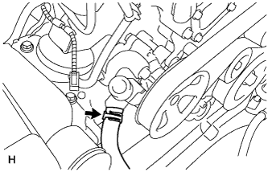
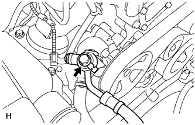
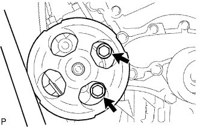

1GR-FE VANE PUMP > REMOVAL |
| 1. DISCONNECT CABLE FROM NEGATIVE BATTERY TERMINAL |
| 2. REMOVE V-BANK COVER SUB-ASSEMBLY |
 |
Remove the 2 cap nuts and V-bank cover.
| 3. REMOVE FAN AND GENERATOR V BELT |
 |
While releasing the belt tension by turning the belt tensioner counterclockwise, remove the fan and generator V belt from the belt tensioner.
| 4. DRAIN POWER STEERING FLUID |
| 5. DISCONNECT POWER STEERING OIL PRESSURE SWITCH CONNECTOR |
 |
Disconnect the connector.
Detach the wire harness clamp from the bracket.
| 6. DISCONNECT NO. 1 OIL RESERVOIR TO PUMP HOSE |
 |
Slide the clip and disconnect the No.1 oil reservoir to pump hose from the vane pump.
| 7. DISCONNECT PRESSURE FEED TUBE |
 |
Remove the union bolt and disconnect the pressure feed tube.
Remove the gasket.
| 8. REMOVE VANE PUMP ASSEMBLY |
 |
Remove the 2 bolts and vane pump.